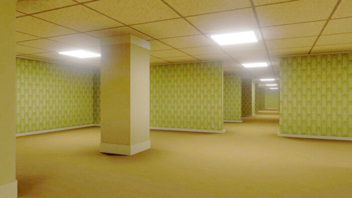

Five Nights
at Yam
חמישה לילות אצל ים
v1.0.0 Offline Edition • מבוסס FNAF
© Five Nights at Yam
לחוויית FNAF מקסימלית ושליטה מלאה במצלמות ובדלתות



נתפסת על ידי ים
שרדת עד: 3:24 AM
שם עובד: השומר האמיץ
תפקיד: סנגור/שומר לילה במתחם ים
סכום שכר: 120.00 ₪
הגדרת רמות קושי לכל דמות (0 עד 20)